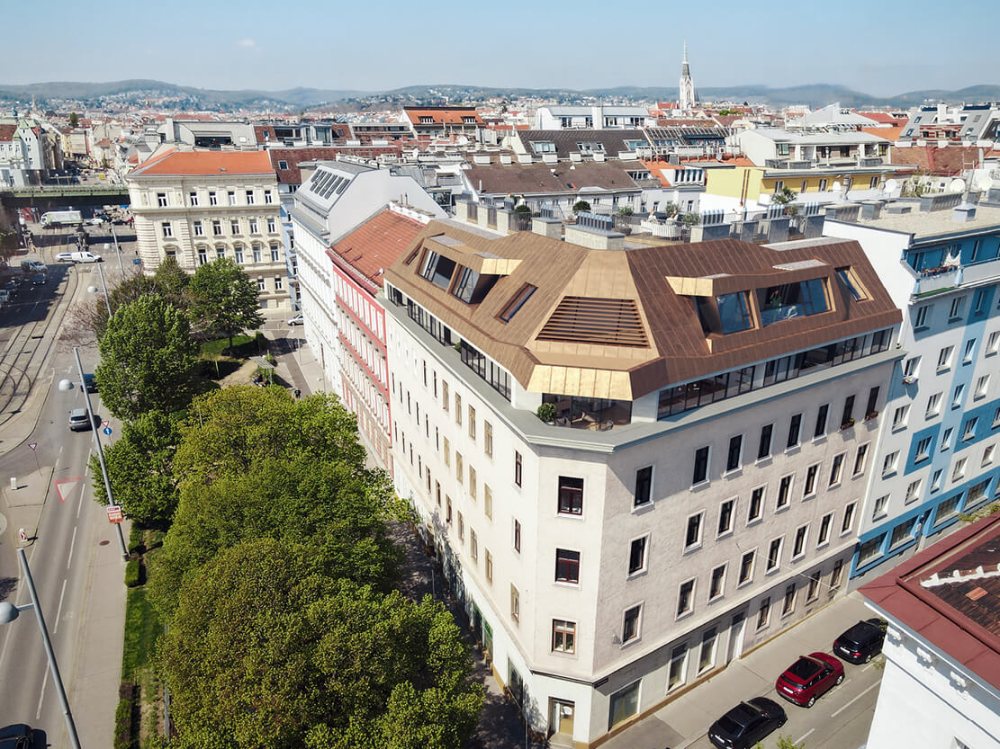
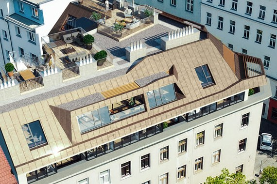
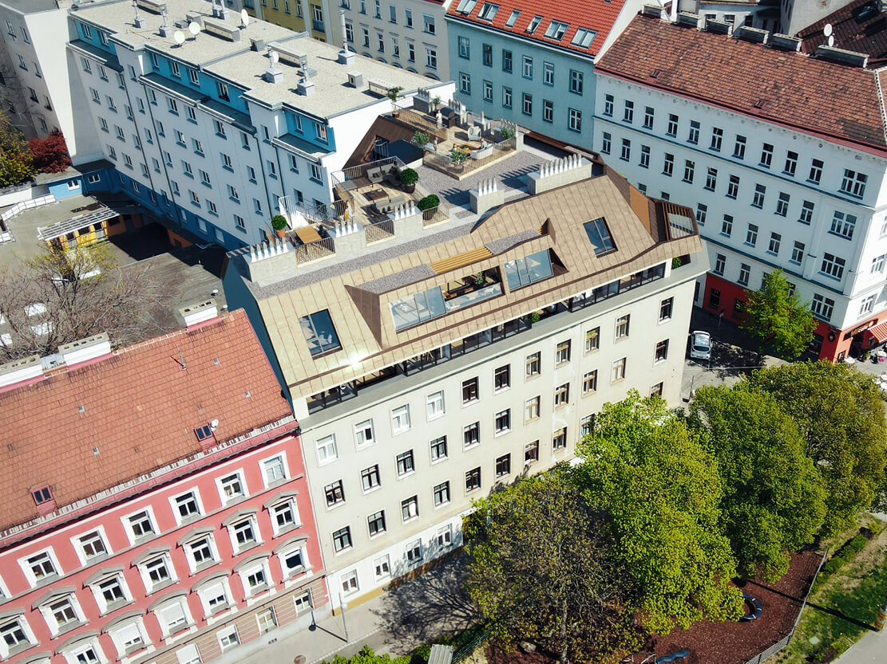
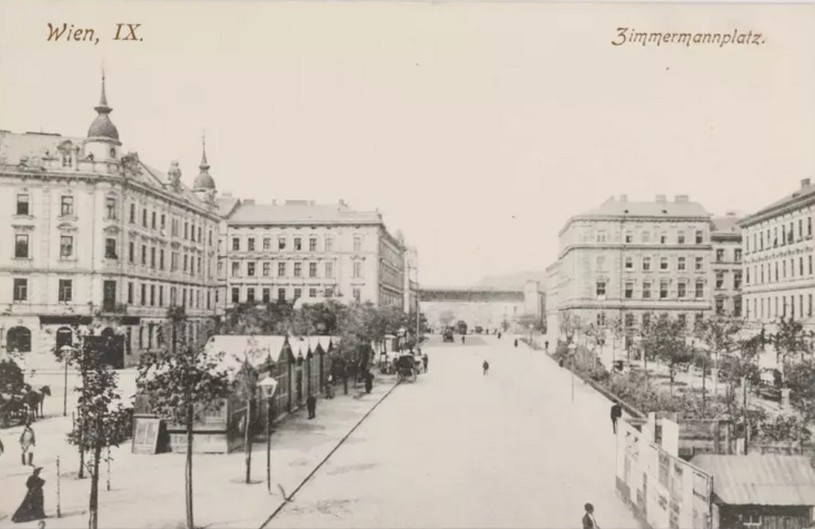
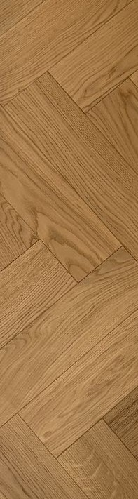
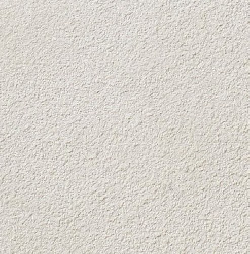
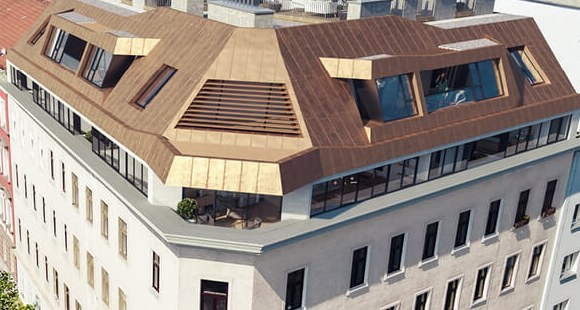
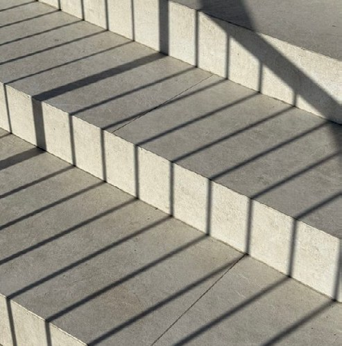

Ein Haus am Platz.
Ein Dach über der Stadt.
17 sanierte Altbauwohnungen und 6 Penthäuser unter einem neuen Dach. Alle mit Außenfläche, viele mit Blick auf den Zimmermannplatz und in den Garten im Hof.
Zu den Wohnungen
Ein Ort mit Geschichte, neu gedacht für zeitgemäßes Wohnen.
Hochwertige Architektur, nachhaltige Bauweise und durchdachte Grundrisse schaffen Wohnraum mit Zukunft. Im gründerzeitlichen Bestand entstehen 17 sanierte Wohnungen mit Fischgrätparkett. Darüber, im neuen Dachgeschoss, sechs Penthäuser mit weiten Terrassen.
Das Eckhaus liegt am Zimmermannplatz im 9. Bezirk. Die Wohnungen im Bestand blicken auf den Platz, in den Hof oder als Durchstecker auf beides. Alle Einheiten werden über eine Wärmepumpe versorgt, das Haus verabschiedet sich vom Gas.



Das Bestehende bewahren. Das Neue darüber setzen.
Stiegenhaus und Allgemeinbereiche werden sorgfältig saniert und erhalten hochwertige Oberflächen. Ein neuer Aufzug führt vom Keller bis ins Dach.
Der Platz trägt den Namen eines Arztes.
Georg von Zimmermann war Leibarzt Kaiser Josephs II. und bekannt für seine medizinischen und philosophischen Schriften. Der Platz, der seinen Namen trägt, liegt nahe der Währinger Straße, umgeben von historischen Häusern.
Der Alsergrund entwickelte sich vom mittelalterlichen Weinbaugebiet zu einem der bedeutendsten medizinischen und wissenschaftlichen Zentren Europas. Im 18. Jahrhundert wurde hier das Allgemeine Krankenhaus gegründet, im 19. Jahrhundert zog die Universität Wien viele ihrer Institute in den Bezirk.
Das Palais Liechtenstein, das ehemalige Wohnhaus Sigmund Freuds und die Gassen des Servitenviertels prägen den Bezirk bis heute als Ort von Kultur und Wissenschaft.

Der Alsergrund ist Weinbaugebiet vor den Toren der Stadt.
Das Allgemeine Krankenhaus wird eröffnet und wird zum Zentrum der europäischen Medizin.
Die Universität Wien siedelt viele Institute im Bezirk an.
Sanierung des Bestands und Neubau des Dachgeschosses beginnen.
Übergabe der 23 Wohnungen und der Gewerbefläche.
Drei Minuten zur U6. Zwölf zur Universität.
- U6 Alser Straße220 m, 3 Min
- Straßenbahn 43 und 44350 m, 5 Min
- Schottentor, Innenstadt12 Min
- Viktor-Frankl-Parkzu Fuß
- Liechtensteinparkzu Fuß
- Altes AKHzu Fuß
- AKH Wiennebenan
- St. Anna Kinderspitalzu Fuß
- Wiener Privatklinikzu Fuß
- Universität Wien12 Min
- Medizinische Universitätzu Fuß
- Servitenviertelzu Fuß
- Liechtensteinstraßezu Fuß
- Währinger Straßezu Fuß
Der Alsergrund ist ein lebhaftes Abbild urbanen Lebens.
In unmittelbarer Nähe liegen die belebte Liechtensteinstraße und das charmante Servitenviertel mit Geschäften, Banken, Apotheken, Buchhandlungen und Cafés. Der Viktor-Frankl-Park, der Liechtensteinpark und das Alte AKH sind Rückzugsorte für Läufer und spielende Kinder. Zahlreiche Bildungseinrichtungen und Universitäten liegen in Gehweite oder wenige Stationen entfernt.
Altbau, sorgfältig saniert.
Wohnungen mit 2 bis 5 Zimmern in den vier Obergeschossen. Fischgrätparkett, hohe Räume, Blick auf den Platz oder in den Garten. Durchstecker verbinden beides.
- Fischgrätparkett in den Wohnräumen
- Fußbodenheizung, im Sommer Temperierung über den Boden
- Einzelraumregelung
- Alle Wohnungen mit Außenfläche
Penthäuser im neuen Dach.
Sechs Einheiten auf 699 m² Nutzfläche mit weiten, intensiv begrünten Terrassen. Ein eigenes Geschoss über den Dächern des Alsergrunds.
- Langdielen, großformatiges Feinsteinzeug, teilweise Naturstein
- KNX Gebäudeautomation
- Splitkühlung, Innengeräte teilweise als Deckeneinbau
- Aufzug mit Penthouse-Steuerung




Was Sie berühren, bleibt.
Eiche, Stein, Putz, Bronze und Grün. Materialien, die mit dem Haus alt werden dürfen.
Ausstattung
Böden
Fischgrätparkett im Bestand, Langdielen in den Penthäusern. Großformatiges Feinsteinzeug in Bad und Nebenräumen, teilweise Naturstein.
Bad
Markenkeramik und Sanitärgegenstände namhafter Hersteller, großformatige Fliesen, ruhige Flächen.
Klima
Versorgung über Wärmepumpe. Fußbodenheizung im Winter, Temperierung über den Fußboden im Sommer. Dachgeschoss mit Splitkühlung, Innengeräte teilweise als Deckeneinbau.
Außen
Alle Wohnungen mit Außenfläche. Intensive Begrünung der Terrassen, außenliegender Sonnenschutz im Neubau, Verschattung der Dachterrassen.
Garten
Ein hofseitiger Allgemeingarten für alle Bewohnerinnen und Bewohner. Ruhe im Inneren des Blocks.
Haus
Neuer Aufzug vom Kellergeschoss bis ins Dachgeschoss, Penthouse-Steuerung für die Dachwohnungen. Einzelraumregelung im Bestand, KNX Gebäudeautomation im Dach. Stiegenhaus und Allgemeinbereiche mit hochwertigen Oberflächen.
Durchstecker.
Wohnungen, die den Block durchqueren: vorne der Zimmermannplatz mit seinen Bäumen, hinten der Garten im Innenhof. Licht von zwei Seiten, Ruhe auf der einen, Stadt auf der anderen.
Finden Sie Ihre Wohnung.
16 Wohnungen von 52 bis 160 m² Wohnnutzfläche, zehn im sanierten Bestand, sechs im neuen Dachgeschoss. Filtern Sie nach Zimmern und Lage im Haus, sortieren Sie nach Fläche.
| Top | Geschoss | Zimmer | Wohnfläche | Freifläche | Status |
|---|